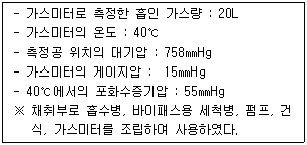
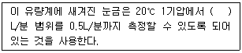
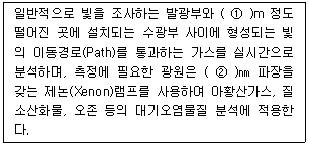
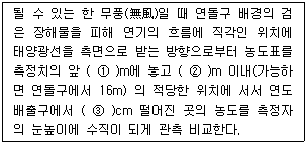
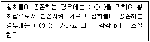
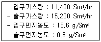
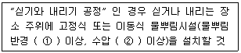

대기환경산업기사 (2011-10-02 기출문제)
1과목: 대기오염개론
1. 다음 특정물질 중 오존파괴지수가 가장 낮은 것은?
- CCl4
- C2F4Br2
- CHFBr2
- C2H3F2Cl
(정답률: 80%)

2. 대기오염물질의 성질 및 인체에 미치는 영향으로 가장 거리가 먼 것은?
- NO는 O3 보다 독성이 수십 배 더 강한 적갈색의 기체이고, 혈중 헤모글로빈과의 결합력은 CO보다 수백배 더 강하다.
- SO2 는 자극성이고, 질식성인 가스로 호흡기의 상기도에 많은 영향을 미친다.
- 일반적으로 1% HbCO(Carboxyhemoglobin) 이하에서 인체에 대한 영향은 아주 미약한 편이다.
- 납의 중독증상으로는 조혈기능장애로 인한 빈혈이며, 이 증상이 계속되면 신경계통을 침해하여 간이나 신경에 나쁜 영향을 미친다.
(정답률: 70%)
3. 대기가 매우 불안정할 때 주로 나타나며, 맑은 날 오후에 주로 발생하기 쉽고, 또한 풍속이 매우 강하여 혼합이 크게 일어날 때 발생하게 되며, 굴뚝이 낮은 경우에는 풍하쪽 지상에 강한 오염이 생기며, 저 ㆍ 고기압에 상관없이 발생하는 연기의 형태는?
- 원추형
- 환상형
- 부채형
- 구속형
(정답률: 89%)
4. 바람에 관한 설명 중 옳지 않은 것은?
- 마찰의 영향이 무시되는 상층에서 코리올리 힘과 기압 경도력의 두 힘만으로 평형을 이루고 있을 때 부는 수평바람을 지균풍이라고 한다.
- 마찰층 내의 바람은 높이에 따라 시계방향으로 각천이가 생겨 위로 올라갈수록 변하는 양이 증가하여 실제 풍향은 경도풍에 가까워진다.
- 육지와 바다는 서로 다른 열적 성질 때문에 주간에는 바다로부터, 야간에는 육지로부터 바람이 분다.
- 산악지형의 경우 일출이 시작되면 산정상에서의 가열이 더 크므로 기류는 산의 사면을 따라 상승하는 곡풍이 생긴다.
(정답률: 72%)
5. 고속도로상의 교통밀도가 20000대/hr이고, 차량의 평균속도가 100km/hr 이다. 차량 한 대의 탄화수소의 배출량이 0.⑤g/s ㆍ 대 일 때, 고속도로에서 방출되는 탄화수소의 총량은 몇 g/s ㆍ m인가?
- 10-1
- 10-2
- 10-3
- 10-4
(정답률: 87%)
6. 다음 중 건조대기(공기)의 부피농도(%) 크기순서로 옳은 것은?
- O2 ＞ CO2 ＞ Ar
- CO2 ＞ O2 ＞ Ar
- CO2 ＞ Ar ＞ O2
- O2 ＞ Ar ＞ CO2
(정답률: 71%)
7. 할로겐화 탄화수소류(halogenated hydrocabons)에 관한 설명으로 옳지 않은 것은?
- 할로겐화 탄화수소는 탄화수소 화합물 중 수소원소가 할로겐원소로 치환된 것으로 가연성과 폭발성이 강하고, 비점이 200℃이상으로 높아 상온에서는 안정하다.
- 대부분의 할로겐화 탄화수소 화합물은 중추신경계 억제작용과 점막에 대한 중등도의 자극효과를 가진다.
- 사염화탄소는 가열하면 포스겐이나 염소로 분해되며, 신장장애를 유발하며, 간에 대한 독작용이 심하다.
- 할로겐화 탄화수소의 독성은 화합물에 따라 차이는 있으나, 다발성이며 중독성이다.
(정답률: 81%)
8. 아연광석의 채광이나 제련 과정에서 부산물로 생성되며, 만성폭로의 가장 흔한 증상은 단백뇨이며, 신결석증과 골연화증을 수반하는 오염물질은?
- 카드뮴
- 납
- 수은
- 석면
(정답률: 83%)
9. 상대습도가 70%이고, 상수를 1.2로 정의할 때, 가시거리가 10km라면 먼지 농도는 대략 얼마인가?
- 50μg/m3
- 120μg/m3
- 200μg/m3
- 280μg/m3
(정답률: 89%)
10. 어느 사업장내 굴뚝 TMS에서의 이산화질소 배출량을 계산하려고 한다. 굴뚝에서의 이산화질소 배출농도가 표준상태에서 224ppm이고, 배출유량이 10000Sm3/hr 일 때 단위 시간당 배출량(kg/hr)으로 환산하면? (단, 표준상태)
- 3.2
- 3.8
- 4.6
- 5.2
(정답률: 66%)
11. 유효 굴뚝높이 120m 굴뚝으로부터 배출되는 SO2가 지상 최대의 농도를 나타내는 지점은? (단, sutton의 식 적용하며, 수평 및 수직 확산계수는 0.⑤, 안정도계수(n)는 0.25)
- 7296m
- 6824m
- 5647m
- 4457m
(정답률: 71%)
12. 지구상에 분포하는 오존에 관한 설명으로 옳지 않은 것은?
- 오존량은 돕슨(Dobson) 단위로 나타내는데, 1Dobson은 지구 대기중 오존의 총량을 0℃ 1기압의 표준상태에서 두께로 환산하였을 때 0.01cm에 상당하는 양이다.
- 몬트리올 의정서는 오존층 파괴물질의 규제와 관련한 국제협약이다.
- 오존의 생성 및 분해반응에 의해 자연상태의 성층권 영역에는 일정 수준의 오존량이 평형을 이루게되고, 다른 대기권역에 비해 오존의 농도가 높은 오존층이 생긴다.
- 지구 전체의 평균오존전량은 약 300 Dobson 이지만, 지리적 또는 계절적으로 그 평균값의 ±50% 정도까지 변화하고 있다.
(정답률: 94%)
13. 다음 중 분산모델의 특징으로 가장 거리가 먼 것은?
- 지형 및 오염원의 조업조건에 영향을 받는다.
- 2차 오염원의 확인이 가능하다.
- 점, 선, 면 오염원의 영향을 평가할 수 있다.
- 지형, 기상학적 정보없이도 사용 가능하다.
(정답률: 81%)
14. 다음 중 “CFC-114” 식의 표현으로 옳은 것은?
- CCl3F
- CClF2 ㆍ CClF2
- CCl2F ㆍ CClF2
- CCl2F ㆍ CCl2F
(정답률: 85%)
15. 최대혼합고(MMD)에 관한 설명으로 옳지 않은 것은?
- 오후 2시를 전후로 해서 일중 최대치를 나타낸다.
- 실제 최대혼합고는 지표위 수 km까지의 실제 공기의 온도종단도를 작성함으로써 결정된다.
- 과단열감률이 생기면 반드시 대류현상이 있게 되고, 이때 대류가 이루어지는 최대고도를 최대혼합고라 한다.
- 최대혼합고가 높으면 높을수록 오염물질이 넓게 퍼져서 더 많은 피해를 입힌다.
(정답률: 78%)
16. 코리올리 힘에 관한 설명으로 옳지 않은 것은?
- 지구의 자전운동에 의하여 생긴다.
- 운동의 방향만 변화시키고 속도에는 영향을 미치지 않는다.
- 지구의 극지방에서 최소가 된다.
- 힘의 방향은 경도력과 반대이다.
(정답률: 89%)
17. 과거의 역사적으로 발생한 대기오염사건 중 London형 smog 의 기상 및 안정도 조건으로 옳지 않은 것은?
- 무풍상태
- 습도는 85% 이상
- 침강성 역전
- 접지 역전
(정답률: 86%)
18. 공기역학직경(aerodynamic diameter)의 정의로 옳은 것은?
- 원래의 먼지와 밀도 및 침강속도가 동일한 구형입자의 직경
- 원래의 먼지와 침강속도가 동일하며, 밀도가 1g/cm3인 구형입자의 직경
- 먼지의 한쪽 끝 가장자리와 다른 쪽 끝 가장자리 사이의 거리
- 먼지의 면적과 동일한 면적을 갖는 원의 직경
(정답률: 92%)
19. 다음 중 가장 높은 농도의 불화수소(HF)에 쉽게 피해를 받는 지표식물은?
- 장미
- 라일락
- 글라디올러스
- 양배추
(정답률: 90%)
20. 체적이 100m3인 복사실의 공간에서 오존(O3)의 배출량이 분당 0.2mg인 복사기를 연속 사용하고 있다. 복사기 사용전 실내 오존의 농도가 0.13ppm라고 할때, 2시간 30분 사용 후 복사실의 오존농도(ppb)는? (단, 0℃, 1기압 기준, 환기 없음)
- 270 ppb
- 380 ppb
- 410 ppb
- 520 ppb
(정답률: 52%)
2과목: 대기오염 공정시험 기준(방법)
21. 굴뚝 배출가스 중 질소산화물의 연속자동측정방법으로 가장 거리가 먼 것은?
- 화학발광법
- 이온전극법
- 적외선흡수법
- 자외선흡수법
(정답률: 80%)
22. 다음과 같은 조건일 때 건조시료 가스상 물질의 시료채취량(L)은?

- 약 15L
- 약 18L
- 약 22L
- 약 25L
(정답률: 51%)
23. 다음은 로우볼륨에어샘플러법에서 사용하는 부자식 면적유량계 측정에 관한 설명이다. ( ) 안에 가장 적합한 것은?

- 0.5~1
- 1~5
- 10~30
- 50~100
(정답률: 60%)
24. 다음은 흡광차분광법(Differential Optical Absorption Spectroscopy : DOAS)에 관한 설명이다. ( )안에 알맞은 것은?

- ① 50 ~ 1000, ② 50 ~ 170
- ① 10 ~ 50, ② 50 ~ 170
- ① 10 ~ 50, ② 180 ~ 2850
- ① 50 ~ 1000, ② 180 ~ 2850
(정답률: 73%)
25. 자외선 가시선 분광법을 이용하여 배출가스 중 납화합물을 분석할 때 납 디티존착염을 추출할 수 있는 용제로 가장 거리가 먼 것은?
- 디티존ㆍ클로로폼용액
- 디티존ㆍ사염화탄소용액
- 디티존ㆍ벤젠용액
- 디티존ㆍ에틸렌용액
(정답률: 61%)
26. 다음 중 암모니아 시료 채취 시 채취관으로 가장 적합한 재질은?
- 염화비닐수지
- 실리콘수지
- 보통강철
- 네오프렌
(정답률: 76%)
27. 환경대기 중에 부유하고 있는 10㎛ 이하의 입자상물질을 여과지 위에 포집하여 질량농도를 구하거나 금속 등의 성분 분석에 이용되며, 흡인펌프, 분립장치, 여과지홀더 및 유량측정부의 구성을 갖는 분석방법은?
- 하이볼륨 에어샘플러법
- 로우볼륨 에어샘플러법
- 광산란법
- 광투과법
(정답률: 72%)
28. 굴뚝배출가스 중의 수분을 측정한 결과, 건조배출가스 1Sm3당 50.6g이었다면 건조배출 가스에 대한 수분의 용량비는?
- 2.6%
- 3.8%
- 5.0%
- 6.3%
(정답률: 42%)
29. 굴뚝 배출가스 중의 아황산가스를 연속적으로 자동측정하는 방법으로 거리가 먼 것은?
- 용액전도율법
- 적외선흡수법
- 불꽃광도법
- 광투과법
(정답률: 70%)
30. 아세틸아세톤법으로 포름알데히드를 분석할 때 시료 중 SO2 가 공존하면 흡수발색액에 무엇을 사용하는 것이 가장 적합한가?
- 염화암모늄
- 염화은용액
- 염화나트륨+염화제이수은
- 암모니아수
(정답률: 84%)
31. 비중이 1.84인 95wt% H2SO4의 몰농도(mol/L)는?
- 8.9
- 17.8
- 26.7
- 35.6
(정답률: 77%)
32. 다음은 굴뚝 등에서 배출되는 매연을 링겔만 매연농도표(Ringelmenn Smoke Chart)에 의해 비교 측정하는 시험 방법에 관한 설명이다. ( )안에 알맞은 것은?

- ① 5, ② 200, ③ 15 ~20
- ① 16, ② 200, ③ 30 ~45
- ① 16, ② 100, ③ 15 ~20
- ① 5, ② 100, ③ 30 ~45
(정답률: 65%)
33. 굴뚝 배출가스 내의 페놀류의 분석방법 중 4-아미노안티피린법에 관한 설명으로 옳지 않은 것은?
- 시료 중의 페놀류를 붕산용액(0.5W/V%)에 흡수시켜 포집한다.
- 흡수액의 pH를 10±0.2로 조절한 후 여기에 4-아미노안티피린 용액과 페리시안산 칼륨용액을 가한다.
- 510㎚의 가시부에서의 흡광도를 측정하여 페놀류의 농도를 산출한다.
- 시료가스 채취량이 10L인 경우 시료 중의 페놀류의 농도가 1~20V/Vppm 범위의 분석에 적합하다.
(정답률: 61%)
34. 굴뚝 배출가스 중 포름알데히드를 측정하기 위해 적용되는 분석방법은?
- 페놀디슬폰산법
- 중화법
- 오르토튤리딘법
- 크로모트로핀산법
(정답률: 75%)
35. 다음 중 원자흡광광도법에서 시료 중의 분석원소 농도를 구하는 정량법과 가장 거리가 먼 것은?
- 검량선법
- 넓이백분율법
- 표준첨가법
- 내부표준법
(정답률: 65%)
36. 질산은적정법으로 시안화수소를 분석할 때 pH 조절에 관한 설명이다. ( )안에 알맞은 것은?

- ① 탄산납, ② 과산화수소수(3%) 1mL
- ① 탄산납, ② 암모니아수(28%) 1mL
- ① 수산화납, ② 과산화수소수(3%) 1mL
- ① 수산화납, ② 암모니아수(28%) 1mL
(정답률: 67%)
37. 가스크로마토그래피법에서 TCD 또는 FID에 일반적으로 사용되는 운반가스(Carrier gas)의 종류로 가장 거리가 먼 것은?
- 헬륨
- 질소
- 수소
- 산소
(정답률: 81%)
38. 철강공장의 아크로와 연결된 개방형 여과집진시설에서 배출되는 먼지채취방법에 대한 규정으로 가장 거리가 먼 것은?
- 등속흡인할 필요가 없으며 채취관은 대구경 흡인노즐(보통 10㎜정도)이 연결된 흡인관을 사용한다.
- 흡인관을 측정점까지 밀어넣고 출강에서 다음 출강 개시전까지를 먼지 배출상태를 고려하여 적당한 시간 간격으로 나누어 시료를 채취하여 구한 먼지농도를 출강에서 다음 출강개시전까지의 평균먼지농도로 간주한다.
- 시료채취시 측정공을 헝겊등으로 밀폐할 필요는 없으며 건옥백하우스의 경우는 장입 및 출강시 20±5L/min의 유속으로 배출가스를 흡인한다.
- 한 개의 원통형 여과지에 포집된 1회 먼지포집량은 20㎎이상 50㎎이하로 함을 원칙으로 한다.
(정답률: 62%)
39. 굴뚝 배출가스 중 황화수소의 메틸렌 블루우 분석방법에서 흡수액 제조시 사용되는 시약이 아닌 것은?
- 수산화나트륨
- 황산아연
- 수산화칼륨
- 황산암모늄
(정답률: 67%)
40. 환경대기 중의 입자상 물질 측정에 사용되는 로우볼륨 에어샘플러(Low Volume Air Sampler) 장치 중 흡인펌프가 갖추어야 하는 조건으로 거리가 먼 것은?
- 연속해서 30일 이상 사용할 수 있어야 한다.
- 진공도가 높아야 한다.
- 맥동이 고르게 작동되어야 한다.
- 유량이 크고 운반이 용이하여야 한다.
(정답률: 79%)
3과목: 대기오염방지기술
41. A전기로에 설치된 Bag filter의 입구 및 출구에서의 가스량과 먼지농도가 아래표와 같을 때 먼지의 통과율은?

- 약 5%
- 약 7%
- 약 9%
- 약 11%
(정답률: 70%)
42. 다음 중 황산화물 처리방법으로 가장 거리가 먼것은?
- 석회수 세정법
- 산화구리법
- 활성탄 흡착법
- 저산소연소법
(정답률: 65%)
43. 불화수소를 함유하는 배기가스를 충전 흡수탑을 이용하여 흡수율 92.5%로 기대하고 처리하고자 한다. 기상총괄이동단위높이(HOG)가. 0.4m 일 때 충전높이는? (단, 흡수액상 불화수소의 평형분압은 0 이다.)
- 1.01 m
- 1.14 m
- 1.3 m
- 1.5 m
(정답률: 61%)
44. 가솔린엔진과 디젤엔진에 관한 설명 중 옳지 않은 것은?
- 일반적인 연소개념으로 보면 가솔린은 예혼합연소, 디젤은 확산연소에 가깝다.
- 디젤엔진의 연소는 화염전파속도 변화폭이 크지 않기 때문에 고속 엔진회전속도에서도 화염면이 벽면까지 충분하게 전파되어 연소를 원활히 마치기 위해서는 연소실의 크기에 제한(실린더직경 160mm 이하)이 있다.
- 디젤엔진은 공급공기가 많기 때문에 배기가스의 온도가 낮아 엔진내구성에 유리하다.
- 가솔린엔진의 경우 공연비 제어가 용이하고 삼원촉매를 적용할 수 있어 배출가스 제어에 유리하다.
(정답률: 63%)
45. 다음 중 C/H의 크기순으로 옳게 배열된 것은?
- 올레핀계 ＞ 나프텐계 ＞ 아세틸렌 ＞ 프로필렌 ＞ 프로판
- 나프텐계 ＞ 올레핀계 ＞ 아세틸렌 ＞ 프로판 ＞ 프로필렌
- 올레핀계 ＞ 나프텐계 ＞ 프로필렌 ＞ 프로판 ＞ 아세틸렌
- 나프텐계 ＞ 아세틸렌 ＞ 올레핀계 ＞ 프로판 ＞ 프로필렌
(정답률: 73%)
46. 메탄올 2kg을 완전연소 할 때 필요한 이론공기량(Sm3)은?
- 2.5
- 5.0
- 10.0
- 15.0
(정답률: 60%)
47. C와 H의 발열량이 각각 28000 kcal/kg, 3⑤00kcal/kg이다. 부탄 1kg 완전연소 시 발생되는 발열량(kcal)은?
- 23934
- 28431
- 30763
- 33015
(정답률: 73%)
48. 미분탄연소의 장점으로 거리가 먼 것은?
- 부하변동에 쉽게 응할 수 있다.
- 연소량의 조절이 용이하다.
- 과잉공기에 의한 열손실이 적다.
- 비산먼지의 배출량이 적다.
(정답률: 68%)
49. A여과집진장치의 설치 초기에는 99%의 집진효율을 보였으나 6개월 후에는 집진효율이 95%로 떨어졌다. 6개월 후 이 집진장치를 통과하여 배출되는 먼지의 농도는 설치 초기에 비해 얼마나 증가하였는가? (단, 기타조건은 고려하지 않음)
- 2배
- 3배
- 4배
- 5배
(정답률: 77%)
50. 지름 40㎛ 입자의 최종 침전속도가 15cm/s 라고 할 때 중력침전실의 높이가 1.25m이면 입자를 완전히 제거하기 위해 소요되는 이론적인 중력침전실의 길이는? (단, 가스의 유속은 1.8m/s)
- 12m
- 15m
- 18m
- 20m
(정답률: 62%)
51. 송풍기의 크기와 유체의 밀도가 일정(상사 제1법칙)할 때 풍압과 회전속도에 관한 설명으로 옳은 것은?
- 풍압은 송풍기의 회전속도의 3승에 비례한다.
- 풍압은 송풍기의 회전속도의 2승에 비례한다.
- 풍압은 송풍기의 회전속도에 정비례한다.
- 풍압은 송풍기의 회전속도에 반비례한다.
(정답률: 68%)
52. 냄새물질에 관한 다음 설명 중 옳지 않은 것은?
- 냄새는 화학적 구성보다는 구성 그룹배열에 의해 나타나는 물리적 차이에 의해 결정된다는 견해가 지배적이다.
- Moncrieff는 원소이든 화합물이든 간에 적린, 글리콜 등과 같이 복합체를 형성하면 냄새가 더 강해진다고 주장했다.
- 냄새는 통상 분자내부진동에 의존한다고 가정되므로 라만변이와 냄새는 서로 관련이 있다.
- 냄새를 일으키는 물질은 적외선을 강하게 흡수한다.
(정답률: 65%)
53. 유입공기 중 염소가스의 농도가 80000ppm 이고, 흡수탑의 염소가스 제거효율은 80% 이다. 이 흡수탑 3개를 직렬로 연결했을 때 유출공기 중 염소가스의 농도는?
- 460ppm
- 540ppm
- 640ppm
- 720ppm
(정답률: 70%)
54. 시간당 10000Sm3의 배출가스를 방출하는 보일러에 먼지 50%를 제거하는 집진장치가 설치되어 있다. 이 보일러를 24시간 가동했을 때 집진되는 먼지량은? (단, 배출가스 중 먼지농도는 0.5g/Sm3 이다.)
- 50kg
- 60kg
- 100kg
- 120kg
(정답률: 68%)
55. 중유 1kg속에 수소 0.15kg, 수분 0.002kg 이 들어있고, 이 중유의 고위발열량이 10000kcal/kg일 때 이 중유 3kg의 저위발열량은 대략 몇 kcal인가?
- 29990
- 27560
- 10000
- 9200
(정답률: 65%)
56. 연료에 관한 다음 설명 중 가장 거리가 먼 것은?
- 중유는 인화점을 기준으로 하여 주로 A, B, C 중유로 분류된다.
- 기체연료는 연소시 공급연료 및 공기량을 밸브를 이용하여 간단하게 임의로 조절할 수 있어 부하변동 범위가 넓다.
- 4℃ 물에 대한 15℃ 중유의 중량비를 비중이라고 하며, 중유 비중은 보통 0.92 ~ 0.97 정도이다.
- 인화점이 낮을수록 연소는 잘되나 위험하며, C 중유는 보통 70℃ 이상이다.
(정답률: 79%)
57. 프로판 432kg을 기화시킨다면 표준상태에서 기체의 용적은?
- 560 Sm3
- 540 Sm3
- 280 Sm3
- 220 Sm3
(정답률: 58%)
58. 다음 세정식 집진장치 중 고정 및 회전날개로 구성된 다익형의 날개차를 고속으로 선회하여 항진가스와 세정수를 교반시켜 먼지를 제거하는 장치로 미세먼지도 99% 정도까지 제거가능하고, 별도 송풍기가 필요 없으며, 액가스비가 0.5~2L/m3 정도인 것은?
- 제트스크러버
- 임펄스스크러버
- 타이젠와셔
- 사이클론스크러버
(정답률: 54%)
59. 전기집긴장치의 유지관리에 관한 설명으로 가장 거리가 먼 것은?
- 시동시에는 배출가스를 도입하기 최소 1시간 전에 애관용 히터를 가열하여 애자관 표면에 수분이나 먼지의 부착을 방지한다.
- 시동시에는 고전압 회로의 절연저항이 100MΩ 이상이 되어야 한다.
- 운전시에 2차 전류가 매우 적을 때에는 먼지농도가 높거나 먼지의 겉보기 저항이 이상적으로 높은 경우이므로 조습용 스프레이의 수량을 늘려 겉보기 저항을 낮추어야 한다.
- 정지시에는 접지저항을 적어도 년1회 이상 점검하고 10Ω 이하로 유지한다.
(정답률: 63%)
60. 다음 집진장치 중 일반적으로 압력손실이 가장 작은 것은?
- 중력집진장치
- 사이클론스크러버
- 충전탑
- 여과집진장치
(정답률: 69%)
4과목: 대기환경 관계 법규
61. 대기환경보전법령상 초과부과금 산정기준에 따른 오염물질 1킬로그램당 부과금액으로 옳지 않은 것은?
- 염소 : 7400원
- 암모니아 : 1600원
- 염화수소 : 7400원
- 불소화합물 : 2300원
(정답률: 68%)
62. 대기환경보전법규상 자동차 종류 중 건설공사에 사용하기 적합하게 제작된 “건설기계”의 규모기준으로 옳은 것은?
- 원동기 정격출력이 1.5kW 이상 2.5kW 미만
- 원동기 정격출력이 2.5kW 이상 9.5kW 미만
- 원동기 정격출력이 9.5kW 이상 19kW 미만
- 원동기 정격출력이 19kW 이상 560kW 미만
(정답률: 62%)
63. 대기환경보전법규상 운행차의 정밀검사 방법·기준 및 검사대상 항목 중 일반기준으로 옳지 않은 것은?
- 배출가스 검사는 관능 및 기능검사를 한 후 시행한다.
- 휘발유와 가스를 같이 사용하는 자동차의 배출가스측정은 휘발유로 전환한 상태에서 배출가스 검사를 실시하고 배출허용기준은 휘발유 기준을 적용한다.
- 차대동력계상에서 자동차의 운전은 검사기술인력이 직접 수행하여야 한다.
- 특수 용도로 사용하기 위하여 특수장치 등을 부착하여 엔진 최고회전수 등을 제한하는 자동차인 경우에는 해당 자동차의 측정 엔진최고회전수를 엔진정격회전수로 수정·적용하여 배출가스검사를 시행할 수 있다.
(정답률: 78%)
64. 대기환경보전법규상 위임업무 보고사항 중 배출부과금 부과 징수실적 및 체납처분 현황의 보고횟수 기준은?
- 수시
- 연 1회
- 연 2회
- 연 4회
(정답률: 74%)
65. 대기환경보전법령상 특별대책지역에서 휘발성유기화합물을 배출하는 시설로서 대통령령으로 정하는 시설은 환경부장관 등에게 신고하여야 하는데, 다음 중 “대통령령으로 정하는 시설”로 가장 거리가 먼 것은?
- 목재가공시설
- 주유소의 저장시설
- 저유소의 출하시설
- 세탁시설
(정답률: 87%)
66. 대기환경보전법상 특별대책지역내의 휘발성유기화합물 배출시설로서 휘발성유기화합물 배출억제시설 등의 조치를 하지 않은 사업자에 대한 벌칙기준은?
- 5년 이하의 징역이나 3천만원 이하의 벌금
- 1년 이하의 징역이나 500만원 이하의 벌금
- 300만원 이하의 벌금
- 200만원 이하의 벌금
(정답률: 64%)
67. 악취방지법상 악취의 배출허용기준을 초과하여 받은 개선명령을 이행하지 아니한 자에 대한 벌칙기준으로 옳은 것은?
- 3년 이하의 징역 또는 2천만원 이하의 벌금
- 1년 이하의 징역 또는 1천만원 이하의 벌금
- 500만원 이하의 벌금
- 300만원 이하의 벌금
(정답률: 61%)
68. 대기환경보전법규상 특정대기 유해물질에 해당하지 않는 것은?
- 클로로포름
- 포름알데히드
- 벤지딘
- 브롬
(정답률: 78%)
69. 대기환경보전법규상 환경기술인의 준수사항으로 가장 거리가 먼 것은?
- 배출시설 및 방지시설을 정상가동하여 대기오염물질배출이 배출허용기준에 맞도록 할 것
- 배출시설의 양도·양수, 설치허가(신고), 변경허가(신고) 등에 관한 업무일지를 사실에 기초하여 작성할 것
- 자가측정한 결과를 사실대로 기록할 것
- 사업장에 상근할 것
(정답률: 60%)
70. 대기환경보전법령상 오염물질 발생량에 따른 종별 사업장의 연결로 옳은 것은?
- 대기오염물질발생량의 합계가 연간 72톤인 사업장 – 1종 사업장
- 대기오염물질발생량의 합계가 연간 22톤인 사업장 – 3종 사업장
- 대기오염물질발생량의 합계가 연간 7톤인 사업장 – 5종 사업장
- 대기오염물질발생량의 합계가 연간 42톤인 사업장 – 2종 사업장
(정답률: 78%)
71. 대기환경보전법규상 자동차연료 제조기준 중 현행 황함량기분으로 옳은 것은? (단, 휘발유 기준)
- 10 ppm이하
- 50 ppm이하
- 70 ppm이하
- 90 ppm이하
(정답률: 74%)
72. 대기환경보전법규상 기상조건 등을 검토하여 해당 지역의 대기자동측정소 오존농도가 0.3피피엠 이상일 때 대기오염발령 경보단계 기준으로 옳은 것은?
- 주의보
- 경보
- 중대경보
- 심각경보
(정답률: 78%)
73. 다중이용시설 등의 실내공기질 관리법규상 실내공기질 권고기준(ppm)으로 옳은 것은? (단, “실내주차장”이며, “오존”항목)
- 0.03 이하
- 0.⑤ 이하
- 0.06 이하
- 0.08 이하
(정답률: 50%)
74. 다중이용시설 등의 실내공기질 관리법규상 실내공기질 유지기준(㎍/m3)으로 옳은 것은? (단, “지하역사”이며, “HCHO” 항목)
- 100 이하
- 120 이하
- 140 이하
- 150 이하
(정답률: 63%)
75. 대기환경보전법규상 배출허용기준 초과와 관련한 개선명령을 받은 자가 시·도지사에게 제출해야 하는 개선계획서에 포함되거나 첨부되어야 할 사항으로 가장 거리가 먼 것은? (단, 개선하여야 할 사항이 배출시설 또는 방지시설인 경우)
- 배출시설 또는 방지시설의 개선명세서 및 설계도
- 배출시설의 운영·관리 진단계획
- 대기오염물질의 처리방식 및 처리효율
- 공사기간 및 공사비
(정답률: 50%)
76. 대기환경보전법규상 전기만을 동력으로 사용하는 자동차의 1회 충전 주행거리가 “80㎞ 이상 160㎞ 미만”인 경우 해당종별 구분기준으로 옳은 것은?
- 제1종
- 제2종
- 제3종
- 제4종
(정답률: 78%)
77. 대기환경보전법규상 정밀검사대상 자동차 및 정밀 검사유효기간기준으로 옳지 않은 것은?
- 비사업용 승용자동차로서 차령 4년 경과된 자동차의 검사유효기간은 2년이다.
- 비사업용 기타자동차로서 차령 3년 경과된 자동차의 검사유효기간은 1년이다.
- 사업용 승용자동차로서 차령 2년 경과된 자동차의 검사 유효기간은 2년이다.
- 사업용 기타자동차로서 차령 2년 경과된 자동차의 검사유효기간은 1년이다.
(정답률: 79%)
78. 대기환경보전법령상 황함유기준을 초과하여 해당 유류의 회수처리명령을 받은 자가 환경부장관 또는 시·도지사에게 이행완료보고서를 제출할 때 구체적으로 밝혀야 하는 사항으로 가장 거리가 먼 것은?
- 유류 제조최사가 실험한 황함유량 검사 성적서
- 해당 유류의 회수처리량, 회수처리방법 및 회수처리기간
- 해당 유류의 공급기간 또는 사용기간과 공급량 또는 사용량
- 저황유의 공급 또는 사용을 증명할 수 있는 자료 등에 관한 사항
(정답률: 60%)
79. 다음은 대기환경보전법규상 비산먼지의 발생을 억제하기 위한 시설의 설치 및 필요한 조치에 관한 엄격한 기준이다. ( )안에 알맞은 것은?

- ① 1.5m, ② 2.5㎏/cm2
- ① 1.5m, ② 5㎏/cm2
- ① 7m, ② 2.5㎏/cm2
- ① 7m, ② 5㎏/cm2
(정답률: 75%)
80. 환경정책기본법령상 이산화질소(NO2)의 대기환경 기준으로 옳은 것은?
- 연간 평균치 0.03ppm 이하
- 24시간 평균치 0.⑤ppm 이하
- 8시간 평균치 0.3ppm 이하
- 1시간 평균치 0.15ppm 이하
(정답률: 64%)